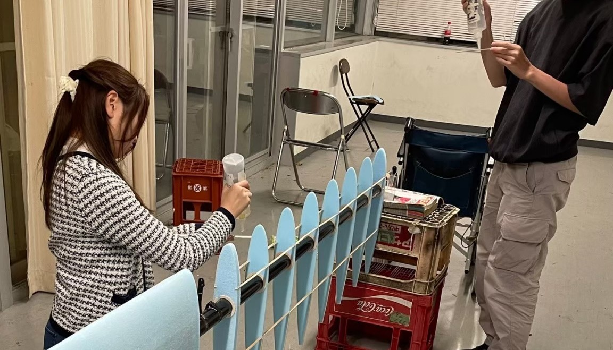
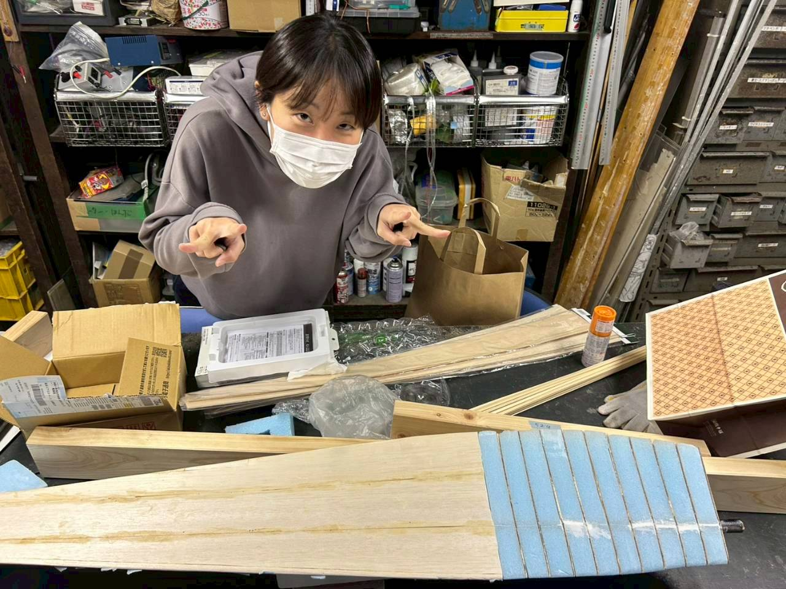
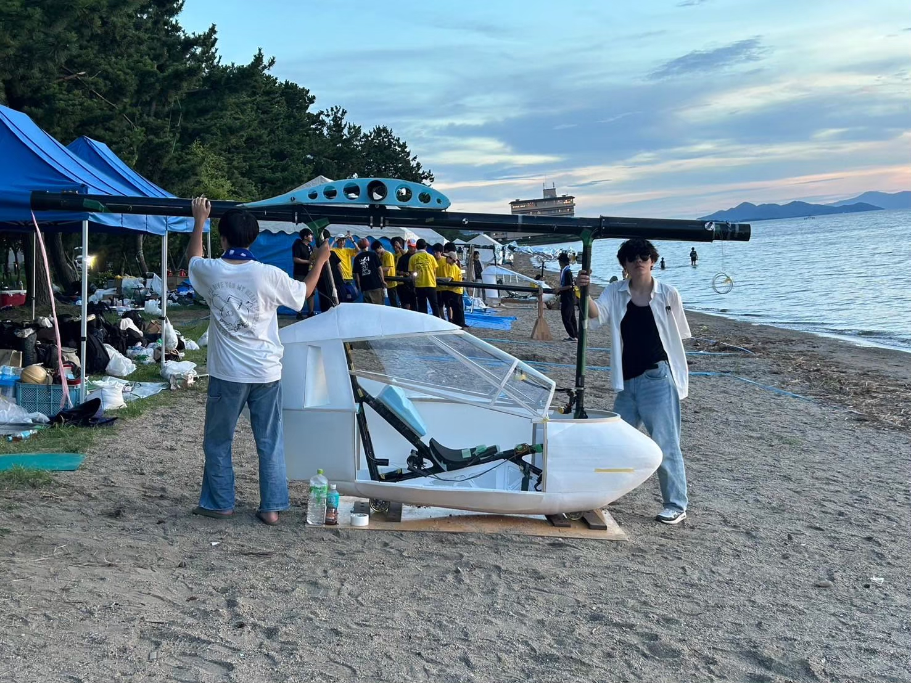
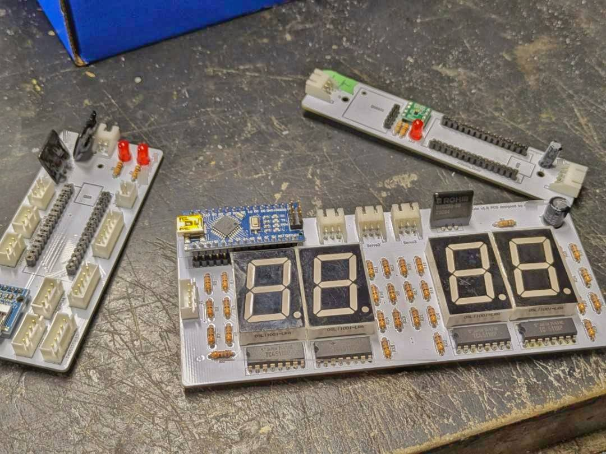
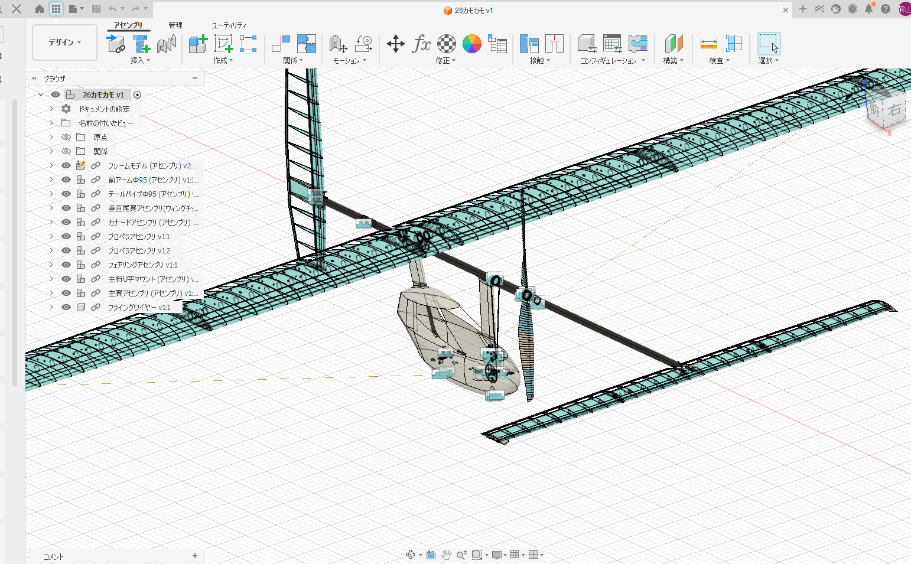

横浜AEROSPACEについて
このサークルについて
横浜AEROSPACE（YAS）は１９９５年に鳥人間コンテストへの出場を目的に設立されたサークルです。もともと、人工衛星コンテストへの出場もあわせて行なっていため、航空宇宙を意味するAEROSPACEと名付けられました。
活動目的は「自分たちの手で、自分たちの作った飛行機を飛ばす」こと。ライト兄弟がおよそ１００年前に挑んだ戦いに、今再び挑んでいます。年間製作機数は１機、メンバー全員が作業を分担し少しづつ作業を進めることで作り上げてゆきます。そして７月末の読売テレビ「鳥人間コンテスト」に参加し、その成果を披露します。
横浜AEROSPACEが作ってきた機体はライト・フライヤー号と同じ「先尾翼型」。およそ４０年前にドーバー海峡の横断に成功したゴッサマー・アルバトロス号もこの先尾翼型でした。多くのチームが通常型人力機で挑む中、数少ない特殊な機体で記録の更新を狙います。
もちろん、機体製作だけでなく合宿や学祭での機体展示・出店といった活動も行なっています。
「大空を飛びたい！」「飛行機を作ってみたい！」「何かおっきなことしてみたい！」そんな人はぜひ一度見学に来てみてください。
部員募集情報はこちら、お問い合わせ＆アクセス情報はこちらから！
先尾翼型飛行機とは？
誰もが知っている、ライト兄弟が作った世界で初めての飛行に成功した飛行機、ライト・フライヤー号。そして、1979年にドーバー海峡横断に成功し、35.8kmを飛行した人力飛行機ゴッサマー・アルバトロス号も先尾翼型飛行機でした。
横浜AEROSPACEは1995年の創立以来、代々この水平尾翼が前方についているという、特徴的な先尾翼型飛行機を制作してきました。先尾翼型飛行機は、水平尾翼と主翼の両方で揚力を生み出せるため、効率的に飛ぶことができる一方、安定性が低いなどのデメリットもあります。
多くのチームが通常型飛行機で挑む中、数少ない特殊な機体で記録の更新を狙います！
横浜AEROSPACEの歴史
●1995年
横浜AEROSPACE発足。第19回鳥人間コンテストに出場し、プラットホームから飛び出した直後に落下（記録16m）
●1996年
前年度危険飛行のため１次審査落選
●1997年
１次審査に合格するも台風で鳥人間コンテストが中止
●1998年
第22回鳥人間コンテストに出場する。プラットホームから飛び出した直後に第旋回し、飛距離 -51mを記録する
●1999年
第23回鳥人間コンテストに出場するも、プラットホーム上で機体が大破し棄権
●2000・2001年
１次審査落選
●2002年
第26回鳥人間コンテストに出場。記録169mのエアロ史上最高記録を出す
●2003年
第27回鳥人間コンテストに出場（記録72m ）
●2004年
第28回鳥人間コンテストに出場。背風が強い中132mを記録するも、大会が中止になり参考記録にとどまる。
●2005年
１次審査に落選するも、記録飛行にてサークル新記録を達成（記録179m : 非公式）
●2006年
第30回鳥人間コンテストに出場。駆動にリカンベント式を初採用。458mを記録し、サークル記録を更新すると共に、出場15チーム中5位という好成績を残す。
●2007年
第31回鳥人間コンテストに出場。天候不順により十分な飛行試験が行えない中、325mを記録。
●2008~2023年
now printing...
●2024年
第46回鳥人間コンテストに出場。新機構FFCを採用し、540mを記録。サークル記録を更新し、審査員特別賞を受賞。
●2026年
現在、機体鋭意製作中
各班紹介
●翼班
主翼、前翼、尾翼の製作を担当します。

●プロペラ班
プロペラの製作を担当します。

●メカ班
フレーム、駆動系、操縦系、フェアリングの製作を担当します。

●電装班
機速計、高度計、姿勢計などの計器の製作を担当します。

●設計班
機体の設計と解析を行います。
